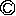

| 5分で落語のよみきかせ とんだ珍騒動の巻 | |
| 小佐田定雄 | |
| PHP研究所 (2006) | |
５分で落語のよみきかせ とんだ珍騒動の巻
小佐田定雄
【おとなのみなさんへ】
これまでに出た二冊の「５分で落語のよみきかせ」は、おかげさまでおおぜいのみなさんに読んでいただいています。
その第三弾として、こんどはとんでもない大騒動がおこるお話を集めてみました。今回も、古典落語だけでなく、新しい落語も入れてみました。落語家さんになったつもりで読んであげてください。
お子さんが「落語」をおぼえたら、こんどはお客さんになって、お子さんの一席を聞いてあげてください。
そして、「落語っておもしろいな」と思っていただけたら、お子さんといっしょに「親子寄席」にも来てくださいね。
あるところに、とても元気な男の子が生まれました。おとうさんとおかあさんは、とても喜んで、この子にとてもしあわせな名前をつけようと思い、もの知りのおしょうさんに相談しました。すると、おしょうさんは、
「じゅげむじゅげむ、ごこうのすりきれん、かいじゃりすいぎょのすいぎょうまつ、うんぎょうまつ、ふうぎょうまつ、くうねるところにすむところ、やぶらこうじぶらこうじ、ぱいぽぱいぽ、ぱいぽのしゅーりんがん、しゅーりんがんのぐーりんだい、ぽんぽこぴーのぽんぽこなーのちょうきゅうめいのちょうすけ」
という長い長い名前をつけてくれました。おとうさんとおかあさんは大喜びです。
じゅげむさんは、元気にすくすくと育って、スポーツならなんでもできる、ばんのう選手になりました。中でもいちばん得意なのはボクシングです。じゅげむさんは、プロボクサーになって、タイトルマッチに出場することになりました。いよいよ、試合の日、リングアナウンサーが、
「赤コーナー。日本バンタム級チャンピオン、ストロング強井。青コーナー。挑戦者、じゅげむじゅげむ、ごこうのすりきれん、かいじゃりすいぎょのすいぎょうまつ、うんぎょうまつ、ふうぎょうまつ、くうねるところにすむところ、やぶらこうじぶらこうじ、ぱいぽぱいぽ、ぱいぽのしゅーりんがん、しゅーりんがんのぐーりんだい、ぽんぽこぴーのぽんぽこなーのちょうきゅうめいのちょうすけ。...... あれっ？ 赤コーナーのチャンピオンは？」
「チャンピオンは、あんまり名前が長いのでおこって帰ってしまいました」
＊
ボクシングは向いていないと思ったじゅげむさんは、こんどは国会議員になろうと思い、選挙にりっこうほしました。そして、選挙カーに乗って、町を走り回りました。
「みなさま、わたくしは、このたびりっこうほいたしました、田中じゅげむじゅげむ、ごこうのすりきれん、かいじゃりすいぎょのすいぎょうまつ、うんぎょうまつ、ふうぎょうまつ、くうねるところにすむところ、やぶらこうじぶらこうじ、ぱいぽぱいぽ、ぱいぽのしゅーりんがん、しゅーりんがんのぐーりんだい、ぽんぽこぴーのぽんぽこなーのちょうきゅうめいのちょうすけでございます。
こんどの投票日には、ぜひとも、田中じゅげむじゅげむ、ごこうのすりきれん、かいじゃりすいぎょのすいぎょうまつ、うんぎょうまつ、ふうぎょうまつ、くうねるところにすむところ、やぶらこうじぶらこうじ、ぱいぽぱいぽ、ぱいぽのしゅーりんがん、しゅーりんがんのぐーりんだい、ぽんぽこぴーのぽんぽこなーのちょうきゅうめいのちょうすけに、清き一票をお願いいたします」
これを聞いた、町の人たちは、
「いま、通ったこうほしゃは、なんていう名前だっけ？」
「えーっと、たしか、じゅげむさんでした」
「いやいや、ごこうさんですよ」
「ちがうよ。かいじゃりさんだよ」
「たしか、ぱいぽぱいぽって言ってたぜ」
みんな、名前をちょっとずつしかおぼえることができませんでした。
＊
国会議員も向いていないと思ったじゅげむさんは、おとうさんのあとをついで、大工さんになりました。そして、きれいなおよめさんをもらいました。ある日のこと、じゅげむさんは、およめさんを連れて、お寺にやってきました。
「こんにちは、おしょうさん。ごぶさたしています。ぼく、およめさんをもらったんです」
「そうらしいな。そちらに座っているかわいいお人かな？ それはおめでとう。よかったよかった」
「ありがとうございます。でもね、たったひとつだけ困ったことがあるんです」
「なんだい、それは？」
「京都のえらい人のおやしきで働いていたことがあって、とてもむつかしいことばを使うんですよ。おいおい、ごあいさつをさせてもらいなさい」
「これはこれは、はじめておめもじいたします。わらわ、父はもと京都の産にして、姓は安東、名は慶三。あざなを五光ともうせしが、わが母三十三歳のおり、ある夜たんちょうをゆめみ、わらわをはらみしがゆえに、たらちねのたいないをいでしころは、鶴女、鶴女ともうせしが、それはようみょう。成長ののち、これをあらため延陽伯ともうすなり」
「へーえ。おまえの名前に負けないぐらい、長いねえ」
「今日は、お願いがあって来たんです」
「なんだい、お願いって？」
「来年になると、ぼくたちのこどもが生まれるんです。ぼくたちみたいにしあわせになれる、おめでたい名前をつけてください」
さて、おしょうさんは、こんどはいったい、どんな長ーい名前をつけるのでしょうか？
「こんにちは。おひさしぶりです」
「よお。だれかと思ったら、ほらさんじゃないか。また、ほらをふきに来たのかい。今日はどんなほらだい。早く聞かせておくれよ。さあふけ、それふけ」
「ちょっと待ってくださいよ。そんな言い方をしたら、わたしがいつもほらをふいたり、ウソをついたりしてるみたいじゃないですか。わたしは、いままでウソなんていっぺんもついたことありませんよ」
「うーん。『ウソをついたことがない』だなんて、これまででいちばんすごいウソだね。そうえんりょせずに、聞かせておくれよ。いつものほら話、ウソ話を。ねえ、ほらさん」
「あのね、わたしの名前は『とらさん』っていうんです。『ほらさん』じゃありません。そんなこと言うんだったら、今日はほんとにほんとのお話をしましょう」
「おもしろそうだなあ。聞かせておくれ」
「じつはわたし、旅行に行ってたんですよ」
「そういえば、しばらく顔を見なかったが、旅にでかけてたのかい。で、どこに？」
「北の寒い寒い国に行ってたんですよ」
「へーえ。そんなに寒いのかい？」
「とまったホテルの名前が『きたかぜホテル』で、部屋の名前が『つららの間』。夜ねるときはおふとんをかぶるんですけど、ふつうのおふとんでは寒いんで、鉄の板をふとんの代わりにかぶるんです」
「鉄の板なんか、冷たいんじゃないかい？」
「そのままじゃあ冷たいんで、鉄板の上でたき火をするんですよ」
「ウソだよ」
「ウソじゃありませんよ。ほんとに寒いんですって。雪がたくさんふって、何メートルもつもるから、もうおとなりの家にも行けなくなっちゃうんです」
「なるほど」
「だから、『今夜は雪がふりそうだな』という日には、となりの家とのあいだに太いパイプを通しておくんです。で、雪がつもったら、このパイプに向かって『おはよーう』って言うんです。と、おとなりにあるパイプの先から『おはよーう』という声が聞こえるんですね。すると、おとなりさんもパイプに『おはよーう』って答えてくれると、うちにも『おはよーう』っていうおとなりさんの声が聞こえてきて、『ああ、おとなりも元気でやってるな』ってわかるんです」
「ふーん。それはちょっといい話だな」
「ところが、もっと寒くなると、この『おはよう』がこおるんですよ」
「なに？ 『おはよう』っていう声がこおっちゃうっていうのかい？」
「そうなんですよ。パイプのこっちがわから『おはよーう』って言うんですけど、その声がパイプのまんなかぐらいでパキーンとこおっちゃうんです。で、おとなりから『おはよーう』って言ってくれたあいさつも、パイプのとちゅうでパキーンとこおるんです。これが、いくつもたまると、パイプのまんなかに『おはよう』のかたまりができちゃうんですよ」
「ふーん。で、どうするの？」
「おとなりからの声が聞こえなくなったら、『ははーん。こおったな』と気がつくから、長ーい鉄のぼうを持ってきて、ドーンとつくんです。と、『おはよう』のかたまりがこわれて、バラバラバラッと向こうの家の中にちらばるんです。で、向こうのストーブのあたたかさで、『おはよう』がとけてきだすんですよ。あっちでオハヨウ！ こっちでオハヨウ！ こっちのすみっこで、オハヨウ、オハヨウ。あっちのすみっこで、オハヨ、オハヨ、オハヨって、やかましいやかましい」
「おまえがやかましいんだよ。声がこおったりするかなあ」
「声ぐらいでびっくりしちゃあいけませんよ。向こうでは火事もこおるんですから」
「火事？ 火事って、家が燃えてる火事のことかい？」
「そうですよ」
「火がこおったりするかい？」
「こおりますよ。『おはよう』がこおるぐらいですから、火ぐらいはこおりますよ。火事で燃えているときに、北のほうから冷たい風がピューッとふいてくると、火が燃えあがった形のままで、カチーンとこおってしまうんです」
「ふーん。で、どうするの？」
「そのままほっといて、あたたかくなってとけたら、また燃えだすでしょう。そうなったらいけないので、ノコギリでこおった火をゴリゴリときりとって、小さい火のかたまりにするんです。その火のかたまりをビニールのふくろに入れて、お湯をかけたら三分でボッと燃えあがる『インスタント火のもと』って売ってるんですよ」
「へーっ。ほんとかい？」
「ハハハハ。ウソですよ」
なーんだ、まただまされたのか。
京都のお金持ちのだんなさんが、あたご山にのぼりました。おともについて行ったのがいっぱちさん。いっぱちさんは大阪の人で、「しょーもない」と言うのが口ぐせでした。「しょーもない」というのは「つまらない」という意味の大阪弁です。
「どうや、いっぱち。ええ景色やろう。これだけの景色は、このあたご山にのぼらんと見ることがでけへんのや」
「ちぇっ、しょーもない。景色ぐらい、どの山から見てもいっしょですがな」
「そんなこと言うなよ。景色は、どこにでもあるかもしれんけど、空気のきれいさはどうや。気持ちがええやろがな。空気がおいしいなあ」
「ちぇっ、しょーもない。空気なんか、なんぼおいしかっても、おなかがふくれまへんわ。だいたい、京都の人はけちんぼやさかいきらいやねん。空気とか、景色とか、ただのもんばっかりじまんして」
「そんなこと言うてんと、『かわらけ投げ』でもして遊ばへんか？」
「なんだんねん、『かわらけ投げ』て？」
「『かわらけ』というのは、土でこしらえた小さいお皿のことや。見てみ。谷底に、まるい板が見えるやろ。かわらけをここから投げて、あの板に当てて遊ぶんや。こういう遊びは大阪にはないやろ？」
「ちぇっ、しょーもない。土のお皿みたいなもん、安いもんですがな。やっぱり、京都の人はけちんぼやなあ」
「ふーん。京都の人はけちんぼか？」
「けちんぼですがな。大阪の人間は、気前がええさかい、お金をどんどん使いまんねで。大阪の人間やったら、あんな土でこしらえたお皿なんか投げまへんわ。お皿の代わりに、小判を投げて遊びまんねんで」
「へーっ。大阪の人間は、小判を投げて遊びなはるのか？」
「そうですがな。京都の人間は土のお皿ですか？ へーん。やっぱりけちんぼやなあ」
「ああそうか。そこまで言うんやったら、わしも小判を投げてみようかな」
「えーっ！ そんな、しょーもないことやめときなはれ。谷底へ投げてしもうたら、もう取りに行けまへんで。お金を投げるなんて、もったいないこと、京都の人間はできますか？」
「できるがな。それっ！」
と言うと、だんなさんはふところから取り出した小判を谷底へバラバラバラッと投げました。びっくりしたのはいっぱちさん。
「うわーっ！ だ、だ、だんなさん。あんた、ほんまに小判を投げたんですか！」
「投げたがな。見てみなはれ。キラキラ光りながら谷底へ落ちていくやないか。きれいやなあ」
「そんなこと言うてる場合やおまへんで。あの小判、どないしますねん？」
「どないもせえへん。あのままや」
「けど、だれかが拾いまっせ」
「拾うたら、拾うた人のもんや」
「えーっ！ ほたら、わたしが拾ったら？」
「おまえのものやがな」
「ありがたい。ほたら、拾いに行こう...... 。うわーっ。深い谷やなあ。うーん、どないして谷底までおりよかなあ」
まわりを見ると、小さなお店があって、その店先に大きなかさが立ててありました。
「そや。このかさを使って飛びおりよう」
いっぱちさんは、大きなかさをしっかり持つと、谷底へ、
「えーいっ！」
と飛びおりました。かさがパラシュートの代わりになって、いっぱちさんの体はフーワフーワと谷底につきました。
「うわーっ。飛べた飛べた。えーっと小判はどこだ？ あったあった。一枚、二枚...... 。すごーい。全部で二十枚もあるぞ」
山の上では心配しただんなさんが、
「おーい。いっぱちーっ。けがはないか？ 小判はあったかーっ？」
「はーい。二十枚ありましたーっ」
「全部おまえにやるぞーっ」
「おおきにありがとーっ」
「どうやって上がってくるーっ？」
「えーっ。しまった。飛びおりるのにいっしょうけんめいで、上がる方法を考えてなかったで。ちょっと待ってとくなはれ」
いっぱちさんは、着ていたきものをビリビリとほそ長くやぶると、そのきれで長いなわをつくりました。山のがけには、太い竹が生えています。なわの先に、石をくくりつけてビュンビュンビューンと投げると、なわは太ーい竹の先にキリキリキリと巻きつきました。そして、なわを力いっぱい、グイグイグイグイとひっぱると、竹がビューンと曲がりました。いっぱちさんが、
「もう、このへんでいいだろう。それっ！」
とジャンプすると、竹がもとにもどるいきおいで、いっぱちさんはもとの山の上にもどってきました。だんなさんはおどろいて、
「うわっ。帰ってきよった。で、小判は？」
「ああ、わすれてきたあ」
一月二十五日は「はつてんじん」といって、天神さまのおまつりです。神社のまわりにはたくさんのお店が出て、とてもにぎやかです。
きんちゃんも、おとうさんに連れて来てもらいました。
「うわあ、おとうさん。いっぱいお店が出てるねえ。あっちはたこ焼き、こっちは焼きそば。栗も売ってるよ。いいにおいだなあ。おめんも売ってるし、わた菓子も売ってるよ。ねえねえ、おとうさん。なにか買ってよ」
「だめだ、だめだ。今日はお参りに来ただけだから、なにも買ってやらないよ」
「ねえ、買ってよ。買って買って買って買ってーっ！ 買ってくれなかったら、そこの水たまりにねころんじゃうぞ！」
「こらこらこら！ そんなことをするんじゃないよ。ちえっ。これだから、おまえを連れて来なかったらよかったんだ。なにがほしいんだよ？」
「じゃあ、みたらし団子を買ってよ」
「みたらし団子か。おい、団子屋さん。一本おくれ」
「へい。まいどありがとうございます」
「おいおい、団子屋。なんだよ、この団子は。みつをつけすぎて、ベトベトになっているじゃないか。こんなの、こどもが食べたら、服にみつをつけてしまうぞ。きんぼう。ちょっと待ってなよ」
と言うと、おとうさんは、みたらし団子にべっとりついたみつをなめはじめました。
「ペロペロ。なんだ、このみつは。あまくもなんともないじゃないか。ペロペロ。店もきたないなあ。ちゃんとそうじしとけよ。ペロペロ。団子屋、おまえ、ひげだらけだなあ。ひげをそりな。ペロペロ。さ、きんぼう、食べな」
「おとうさん。これ、なあに？」
「みたらし団子じゃねえか。食いな」
「みたらし団子っていうのは、みつがおいしいから食べるんじゃないか。これ、みつがちょっともついてないじゃないか」
「うるせえなあ。おい、団子屋。ここにあるつぼにはなにが入ってるんだ？」
「これですか。これは、みつですよ」
「そうか。じゃあ、いっぺんつけさせろよ。ドボン」
「うわっ！ だ、だめですよ。そんなことしちゃあ」
「うるせえな。さ、きんぼう。みつをつけてやったから、食いな」
「ありがとう、おとうさん。ペロペロ。あ、ほんとだ、ちっともあまくないね。団子屋のおじさん、ちゃんとそうじしときなよ。ペロペロ。ひげもちゃんとそりなよ。ペロペロ。あっ。みつがなくなっちゃった。ぼくにもつけさせてね。ドボン」
「うわっ！ だ、だめだよ、ぼうや！ もう、親子でなにをするんだよ」
おとうさんと、きんちゃんはすたこら逃げて行きました。
「ねえ、こんどはたこを買ってよ」
「またかい。だめだだめだ。団子を買ってやったじゃないか」
「ねえ、買ってよ。買ってくれないなら、あそこの水たまりにねころんじゃおーっと」
「待てよ！ わかったよ。もう、これでおしまいだぞ。だから、おまえなんか連れて来なかったらよかったんだ」
おとうさんはぶつぶつ言いながら、たこを買ってくれました。
「ねえ、おとうさん。たこ上げをしようよ」
「うん。風もふいているし、今日はよく上がりそうだな。よし。広場へ行こう」
おとうさんときんちゃんは広場にやってきました。おとうさんは、きんちゃんにたこを持たせると、
「さあ、きんぼう。おまえは、たこを持って立っていろよ。おとうさんが、『それっ』と合図したら手をはなすんだぞ」
そして、糸をどんどんのばしながら遠くに行くと、
「いいかーい。きんぼーっ。それーっ！」
きんちゃんが手をはなすと、たこはシューッと空に上がっていきました。
「うわあ。おとうさん。じょうずだねえ。たこがどんどんどんどん上がってるよ」
「あたりまえだい。おとっつあんは、こどものころ、たこ上げの名人って言われてたんだからな」
「うん。ほんとに名人だね。ほかのたこよりも、ずっと高く上がってるね。ねえねえ、ぼくにも糸を持たせてよ」
「だめだだめだ。いま、おまえに持たせたら、せっかく上がったたこが落ちてしまうからな」
「そんなことないよ。ぼくもうまいんだよ」
「だめだって言ってるじゃねえか。そっちへ行ってろ。だいたい、たこ上げなんて、こどものするもんじゃねえんだ」
夢中になっているおとうさんを見て、きんちゃんは、
「ああ、だから、おとうさんなんか連れて来るんじゃなかったな」
「こんにちは。ごめんください」
「はい。どなたです？」
「こちらの長屋に空き家がありますよね」
「ええ。うちの向かいが空いてますけど」
「あのー、やちんはおいくらでしょうか？」
「え？ うちのお向かいをお借りになりたいんですか？ ああ、そうですか。フフフフ」
「な、なんですか。なにかおかしいですか」
「やちんでしたら、いらないんですよ」
「えーっ！ やちんがいらないんですか？」
「そうそう。いらないどころか、あの家に住んでたら、やちんは大家さんからもらえるんですよ」
「そ、それ、どういうことですか？」
「あの家には三日...... と言いたいけど、ひとばんでも住んだ人がいないんですよ」
「そ、それって、どういうことですか？」
「あの家、昼間はなにごともないんですけどね、夜中の二時ごろになりますとね、どんなによくねていてもなぜか目がさめてしまうんですって」
「へ、へい」
「と、おもてをだれかが歩く足音が、ジト... ジト... ジト... とするんですって。その足音が、あの家の前で止まったと思ったら、おもての戸がかってにスーッと開くんです。と、なまぐさーい風がスーッと家の中にふいてきたかと思うとね、いつの間に入ってきたのかはわからないけども、ねているまくらもとに、かみのけの長い血まみれの女の人が立っていて、『う～ら～め～し～やぁ』と言うと、冷たい手でねている人のほっぺたを、すーっと...... 」
「ぎゃーっ！ こわいよーっ！」
男の人は走って逃げて行きました。そのあとに入ってきたのは、となりに住んでいるとらさんです。
「くまさん。いまの話はほんとかい？」
「ハハハ、いまの話はウソだよ」
「なんだ、ウソかよ。そうだろうと思った。向かいの家にそんなこわいことがあるのに、おれが知らないのはおかしいもんな」
「ちょうどたいくつしてたからね、ウソのこわい話をして、おどかしてやったんだよ」
「ふーん。おもしろいなあ。おや。こんなとこにさいふが落ちてるよ。いまのやつが、あんまりおどろいたんで、落として行ったんだな。あれだけこわがってたから、取りに来ないと思うよ。取りに来なかったら、これでいっぱい飲みに行こう」
「こりゃあ、いいや。まただれか来て、さいふを落として行ったらいいね」
とらさんが帰ったあと、こんどは元気のいい人が入ってきました。
「おう。ちょっと聞くがな。てめえんとこの向かいのおんぼろな家だがな、やちんはいくら取りやがるんだ」
「なんだか、らんぼうな人が来たな。うちのお向かいをお借りになりたいんですか？ ああ、そうですか。フフフフ」
「なにを笑ってやがんだ！」
「こわい人だな。いえ、やちんでしたら、いらないんですよ」
「ふーん。いらねえのか？」
「いらないどころか、あの家に住んでたら、やちんは大家さんからもらえるんですよ」
「ふーん。いいねえ。おれ、そんな家をさがしてたんだ。よしっ。ここに決めた」
「あ、ちょっとお待ちください。大家さんからやちんをもらえるんですよ。なにか悪いことがあると思いませんか？」
「なにがあってもいいよ。おれ、平気だ」
「ちょ、ちょっと待ってください。あの家、昼間はなにごともないんですけどね、夜中の二時ごろになりますとね、どんなによくねていてもなぜか目がさめてしまうんですって。と、おもてをだれかが歩く足音が、ジト... ジト... ジト... とするんですって」
「のら犬だな。このへんうろうろしてやがるんだ。けとばしてやる」
「いえ、そうじゃないんです。その足音が、あの家の前で止まったと思ったら、おもての戸がかってにスーッと開くんです」
「ふーん。便利だなあ」
「いえ、そうじゃなくって、なまぐさーい風がスーッと家の中にふいてきたかと思うと、ねているまくらもとに、かみのけの長い血まみれの女の人が立っていて、『う～ら～め～し～やぁ』。...... あのー、こわくありませんか？」
「こわくねえよ。そうか。そんなやつが来てくれるのか。よーし、料理とか洗たく、そうじはその女にやらせよう。もし、かわいい女だったら、よめさんにしてやってもいいぞ。じゃあ、あした、ひっこしてくるからな。さよなら」
「あっ！ だめだだめだ」
「おーい、くまさん。こんどのやつはなにをわすれて行った？」
「ああ、とらさんかい。だめだよ。こんどのやつはこわがらないよ」
「えーっ。そりゃ、えらいことだ。じゃあ、さいふもわすれて行かなかったんだ」
「うん。...... あーっ！ たいへんだ！」
「ど、どうしたの？」
「わすれて行くどころか、さっきのさいふを持って行っちゃった」
もの知りの甚兵衛さんのうちに、徳さんがやってきました。徳さんはにこにこ笑いながら、
「こんど、新しい商売を始めようと思いまんねん」
「ふーん。どんな商売や？」
「食べもの屋なんですけどね、いままでだれもやったことがないという、めずらしい料理を出そうと思うてまんねん」
「めずらしい料理て、どんな料理や？」
「あのね...... 『てんすき』」
「なに？『てんすき』てなんや？」
「わかりまへんか？ てんぐのすき焼き。ちぢめて『てんすき』ですわ」
「てんぐのすき焼き？ てんぐて、あの鼻の高い、赤い顔したてんぐさんか」
「そうです。けど、あの大てんぐは料理にするには大きすぎるさかい、その子分の『からすてんぐ』という小さいてんぐをつかまえてきますねん。それを料理して、すき焼きにして出しますねん。みんな、びっくりして食べに来ると思いまっせ」
「そらあ、来るやろ。おいしいかどうかは知らんけど、めずらしいというだけでもいっぺんは食べよと思うやろな。けど、料理に使う『からすてんぐ』は、どこにいてんねん？」
「さあ、それをあんたに教えてもらおと思うて来ましたんや。どこにいてますか？」
「知らんで。だいたい、てんぐてなもん、ほんまにいてるか？」
「えーっ！ いまごろ、そんなこと言うても困りまっせ。もう、お店のじゅんびはできてるのに」
「知らんがな」
「てんぐて、どこに住んでるんですか？」
「わしもくわしいことは知らんけどな、このあたりやったら京都のくらま山の山奥に『そうじょうが谷』というところがあって、そこに『大杉』と呼ばれている大きな杉の木がある。まいばん、その木のてっぺんにてんぐがおりてくるという話を聞いたことがあるけどな」
「なるほど。くらま山の大杉ですか。ほたら、これからさっそく行ってきますわ」
と、徳さん、おおいそぎでてんぐをつかまえるじゅんびを始めました。
「てんぐがあばれたらいけないから、つかまえたときにしばりあげるなわがいるなあ。そうそう、しばりつける太い竹のぼうもいるぞ」
徳さんは、太い竹をかつぐと京都のくらま山にやってきました。
「うわあ、大きい杉の木やなあ。これが、甚兵衛さんの言うてた大杉にちがいない。よーし。この木の下に座って、てんぐの出てくるのを待っていてやろう」
徳さんは、大杉にもたれててんぐの出てくるのを待っているうちに、歩いてきたつかれでねむってしまいました。ずいぶん時間がたってから目をさました徳さんは、
「あ、あ、あーっ。よくねたなあ。あれれれ、いつの間にかあたりはまっ暗やがな。夜がふけてしもたんやな。てんぐはどないなってんねやろ」
と、あたりを見まわしていると、ちょうどこの夜、この大杉のすぐそばにあるお堂で、えらいお坊さんがおいのりをしていました。おいのりが終わって、お坊さんがお堂から出てきたとき、風がびゅーっとふいてきて、お坊さんの着ていた衣がバサバサバサ。それがちょうど、てんぐのはばたく音に聞こえました。徳さんは、
「あっ。てんぐや。しかも、人間とおんなじぐらい大きいやっちゃ。よーし、つかまえたるぞお」
徳さんは、なんにも知らないで歩いてきたお坊さんに、
「やい！ てんぐめ！ 逃がさへんぞ」
と、飛びかかりました。お坊さんはおどろいて、
「ああ、これこれ。なにをするのじゃ。らんぼうなことはやめなされ」
「このてんぐ、ようしゃべるなあ。静かにせんかい！」
とうとう、かわいそうなお坊さんを竹のぼうにしばりつけて、くらま山からおりてきました。
このようすを見た町の人がおどろいて、
「もし。そのお坊さん、なんぞ悪いことしはりましたんか？」
「なに言うてんねん。これはてんぐやないか。わしが、いま、つかまえてきたんやで」
「ちゃいます、ちゃいます。それは、くらま山のお寺のえらいお坊さんどっせ」
「なにを言うてんねん。このてんぐがお坊さんやなんて...... あれれれ、ほんまにお坊さんや」
「ほれ、みてみなはれ。早いこと、助けてあげなはれ」
「いやいや、これはてんぐがお坊さんにばけたにちがいない」
「まだそんなこと言うてんのか。おい、みんなでこいつをつかまえろ！」
と、とうとう徳さんがつかまって、自分で持ってきた竹のぼうにしばりつけられてしまいましたとさ。
どろぼうがふたり、相談をしています。
「今夜入ろうと思っているのは、ここの八百屋だ」
「へーえ。ここへ入るんですか？ 大きい八百屋さんですねえ。じゃあ、いまから入りましょうか？」
「おまえ、なにを言ってるんだ。まだ昼間だぞ。お店は開いてるんだぜ。お客さんも来てるし、店の人も働いているのに、そんなとこへのこのこ入って行ってどうするんだ」
「ああ、なるほど」
「なるほどじゃあないよ。夜になって、店の人がねてしまってから入るんだよ」
「でも、夜になったらかぎをかけるから、入れなくなるんじゃないですか」
「さあ、そこで頭を使うんだよ」
「へーえ。頭を使って入るんですか。わかった。頭をおもての戸にドンドンとぶっつけてこわしてしまうんですね」
「そんなことしたら、こっちの頭がこわれちまうじゃないか。そうじゃなくって、知恵を使うんだよ。夜になったら、おまえ、このふくろの中に入るんだ」
「このふくろ？ これ、おいもを入れるふくろじゃないんですか」
「そうだよ」
「えー。親分。おいもを買ってくれたんですか。わーい。おいら、おいもが大好きなんですよ。ふかしてもおいしいし、いしやきいももおいしいし、おいら、いくらでも食べられますよ。でも、あれを食べると、どうしてプップーッっておならが出るんでしょうね？」
「知らないよ、そんなことは。おいもを食べるんじゃないよ。おまえを、このおいものふくろの中に入れて、八百屋さんの前に置いておくんだ」
「え？ おいらがおいもさんになるんですか」
「そうだ。そうしておいて、おれが八百屋さんの戸をたたいて『もしもし。売り物のおいものふくろをしまいわすれてますよ』って声をかけるんだ。そうしたら、店の人が出てきて、『ほい。わすれてた』と言って、おまえが入ったふくろを店の中に入れてくれる。おまえは、ふくろの中でじっとしていて、店の人がみんなねてしまったら、ふくろの中から出てきて、うちがわからかぎを開けてくれ。そうしたら、おれが入って行っていっぱいぬすむから」
「へーえ。親分は頭がいいなあ」
さて、その夜おそく、どろぼうの親分と子分は、昼間の八百屋さんの前にやってきました。
「さあ、このふくろの中に入るんだ。いいか。入ったら絶対にものを言っちゃあいけないぞ。おいもがしゃべったりしたら、ばれてしまうからな」
「わかりました。絶対にしゃべりません」
「よし。じゃあ、ふくろの中に入れ」
子分は、おいものふくろの中にゴソゴソゴソと入りました。
「いいか。ふくろの口はゆるめにしばっておくから、夜中になったら中から開けて出てくるんだぞ。いいな」
「わかりました。でも、ふくろの中ってあたたかくていいですねえ。なんだかねむたくなってきた」
「だめだぞ、ねちゃあ。ちゃんと起きていて、夜中に戸を開けなくちゃならねえんだぞ。わかってるか」
「わかってますよ。まかしといてください」
「ほんとにだいじょうぶかなあ。いいか。もうしゃべっちゃあいけないぞ」
そして、お店の中に向かって大きな声で、
「もしもーし！ 八百屋さーん。お店の前においものふくろがしまいわすれてありますよーお！」
と言うと、親分はゴミばこのかげにかくれました。その声を聞いた八百屋のおじさんは、
「はいはい。いま開けますから、ちょっとお待ちください」
八百屋のおじさんは、おもてに出てくると、おいものふくろをみつけて、
「おやおや。ほんとにしまいわすれてるじゃないか。どこのどなたかはわからないけど、親切な人が教えてくださったんだ。店の中に入れておこう。よいしょ、よいしょ。いやに重いなあ。このなかみ、ほんとにおいもなのかなあ」
八百屋のおじさんは、ふくろの口から手をつっこんで、中の子分の頭や背中をなで回しました。子分は、しばらくはがまんをしていたのですが、あんまりくすぐったいので、笑いそうになりました。笑うのをぐっとこらえたとたん、おしりからおならがブーッ。
びっくりした八百屋のおじさんが、
「うわっ。気の早いおいもだ。食べる前におならをしやがった」
あるところに、とてもあわてんぼのおじさんがいました。名前を徳さんといいます。ある日のこと、徳さんはうちに帰ってくると、奥さんのおはなさんに、
「おい、おはな。おれは、あわてんぼだな」
「ええ、そうですよ。あなたは、あわてんぼですよ」
「いま、甚兵衛さんのところで、あわてんぼをなおす方法を教えてくれたんだ」
「あら、そう。どうしたらいいんですか？」
「おれのあわてんぼは、ふつうではとてもなおらないから、神さまにお願いするしかないんだそうだ。この先の、あれの上になにがあるから、そこへあれしたらいいって言うんだよ」
「なんのことだかわかりませんね。どこの上になにがあるんですか？」
「だからさ、この先にあるじゃねえか。土がこう高くなってるところが」
「ああ、はちまん山ですか」
「そうそう。そのはちまん山の上にあるじゃないか、あれが」
「ああ、はちまんさまですか」
「そうそうそう。そこで、はちまんさまの神さまにお願いしてみろって言うんだよ」
「まあ、そうですか。それはいいかもわかりませんね」
「朝早くお参りに行ったほうがいいというから、今日はもうねようか」
「ちょっと待ってくださいよ。ねるって、まだお昼すぎですよ。まだ明るいじゃありませんか」
「いいんだよ。戸をしめたら暗くなるだろ」
「おもてが明るいですよ」
「お月さまが明るいんだと思え」
「そんなこと思えませんよ」
さて、そのあくる朝、おはなさんが徳さんを起こしています。
「ちょっと、あんた。今日ははちまんさまにお参りに行くんじゃなかったの。ちょっと。起きなさいよ！」
「はいはいはい。なんだよ。こんなに早く」
「今日は、はちまんさまにあわてんぼをなおしてもらいに行くんじゃなかったの？」
「ああ、そうだった。じゃあ行ってきます」
「ちょっとお待ちなさい。はだかでおもてに飛び出しちゃだめですよ。ちゃんときものを着て。それは、わたしのきものですよ。自分のきものに着がえてくださいよ。そこに、ふろしきに包んだお弁当が置いてあるでしょ。それを首にくくりつけて行ってらっしゃい」
「行ってきまーす。しかし、どうしておれは、あわてんぼなのかなあ。困った困った。急いで行かなくっちゃな。急いで急いで...... 。あれっ。おれ、どこへ行くんだったっけ。わすれちゃったよ。このおじさんに聞いてみよう。あのー、すいません」
「はい。なんですか？」
「わたしはどこへ行くんでしょうか？」
「知らないよ。自分で思い出しなさいよ」
「そんなこと言わないで、いっしょに思い出してくださいよ。わたしはね、とてもあわてんぼなんですよ。そのあわてんぼをなおしてもらおうと、はちまんさまにお願いしに行くところなんですから」
「ふーん、あなたははちまんさまへ行くんですか」
「あ、そうですそうです。なーんだ。やっぱり、知ってたんじゃないですか」
「なに言ってるんですか。いま、あなたが言ったじゃないですか。ほんとにあわてんぼだなあ。はちまんさまだったら、この道をまっすぐ行ったらありますよ」
「ああ、そうですか。じゃあ行ってきます。ほんとに、おれはあわてんぼだなあ。困った困った。えーっと、このあたりじゃないかな。また、だれかに聞いてみよう。すいません。はちまんさまはどこでしょうか？」
「はちまんさまなら、ここですよ」
「あ、そうですか。じゃあ、あなたがはちまんさまですか？」
「ちがうちがう。はちまんさまは、このおやしろの中におられるんですよ」
「ああ、こっちですか」
徳さんは、手をポンポンとたたくと、
「えー、はちまんさま、わたしは徳さんというんですが、あわてんぼで困ってるんです。なんとかなおしてやってください。お願いしますよ。あ、そうだ。神さまにお願いするときは、おさいせんをさしあげなきゃいけませんよね。いま、さしあげますから」
と言うと、首にくくりつけてあった、ふろしき包みをさいせんばこの中にポーンとほうりこんでしまいました。
「あーっ！ たいへんだ、たいへんだ。すいません。神主さん。いま、はちまんさまにおさいせんをあげようと思って、まちがえて、わたしのお弁当をほうりこんでしまったんです」
神主さんは笑いながら、
「ほんとに、あなた、あわてものですねえ」
と言って、ふろしき包みを取ってくれました。
「ありがとうございます。ちょうどおなかがすいてきたんで、ここでお弁当を食べさせてもらいます」
と、徳さんがふろしきを広げたら、お弁当ではなくて、まくらが入っていました。
漁師さんが、見たこともないふしぎな魚をつりあげました。頭がさんかくで、目玉と口が大きくて、せびれがとんがっている変なお魚です。漁師さんたちがおおぜいあつまって、
「だれか、この魚の名前、知っとるものはおりゃあせんか？」
「うーん。わしは見たことがないぞ」
「とっつぁんでも見たことないか。こうなったら、おだいかんさまに見てもらうしかあるまいて」
漁師が見てもわからないお魚ですから、おだいかんさまも、わかるはずがありません。しかたがないので、その魚の絵をかかせて、だいかんしょのおもてにはりだしました。
「この絵の魚の名前を知っているものは申し出るように。ほうびは十両である」
と、この紙をじーっと見ていたひとりの男がだいかんしょの役人に、
「えー、お願いでございます。わたくし、にすけと申すものでございますが、この絵の魚の名前を知っております」
と言いました。さっそく、にすけはおだいかんさまの前に通されました。
「にすけとやら、そのほう、この魚の名前を知っていると申すのか」
「はい。まちがったらいけませんので、ほんもののお魚をお見せください」
ふしぎなお魚をにすけに見せると、にすけは、
「まちがいございません。これは、『てれすこ』というお魚でございます」
「なに？ 『てれすこ』？ こりゃまた、変な名前じゃなあ」
「えー、ごほうびのお金を」
「わかった。これ、ほうびの金を取らせよ」
にすけは大喜びで、お金をもらって帰って行きました。それを見ていた、おだいかんさまの家来のさんぞうさんがふしぎに思って、おだいかんさまに、
「あのー、おだいかんさま。このお魚、ほんとに『てれすこ』なんて変な名前なんでしょうか？」
「いくら変な名前でも、あの男がそうじゃと言うから、しかたないではないか」
「おだいかんさま、だーれもこの魚の名前を知らないんですから、『てれすこ』と言おうと、『げろげろ』と言おうと、ほんとかどうかわからないのではありませんか」
「えーっ！ ああそうか。それなら、あのにすけという男、まんまと十両を持って行ったのじゃな。うーん。くやしいなあ。なんとかして、こらしめてやりたいものだ」
おだいかんさまは、カンカンにおこりましたが、どうにもしようがありません。
そうこうしているうちに、このめずらしいお魚が死んでしまいました。死んだお魚を干して、干物にしたところ、生きていたころのふしぎな姿より、もっともっとふしぎな、もとの姿とはぜんぜんちがう姿になってしまいました。
これを見たさんぞうさんは、
「おだいかんさま。この干物になった魚を絵にかかせて、だいかんしょのおもてにはりだしましょう。そして、『この絵の魚の名前を知っているものは申し出るように。ほうびは十両である』と書くのです」
「さんぞう。そちはバカか。そんなことをしたら、またにすけが来て、いいかげんな名前を言うにちがいないではないか」
「それがねらいでございます。にすけが、前とちがう名前を言ったりしたら、『同じものなのに、ちがう名前を言うとはなにごとじゃ！ この大ウソつきめ！』としかりつけてやるのです」
「なるほど。それはおもしろかろう」
さて、干物の絵をだいかんしょの前にはりだしたところ、思ったとおり、にすけが来て、
「えー、このたびの絵の魚の名前も知っております」
おだいかんさまが、
「そのほう、このたびの魚の名前も知っていると申すのか」
「はい。まちがったらいけませんので、ほんもののお魚をお見せください」
ふしぎなお魚の干物をにすけに見せると、にすけは、
「まちがいございません。これは、『すてれんぎょ』というお魚でございます」
「『すてれんぎょ』？ それにちがいないな？ これ、この者をつかまえろ！」
「しばらくしばらく。わたくし、なんぞいたしましたか？」
「これは、この前、おまえが『てれすこ』と言った魚を干したものじゃ。同じ魚なのに、ちがう名前を言うとはなにごとじゃ。この大ウソつきめ」
「しばらくお待ちください。おだいかんさま、イカの干したのはスルメと名前が変わります。このお魚も、生で『てれすこ』、干したら『すてれんぎょ』となるのでございますよ」
こう言われたおだいかんさま、
「う、うーん。そ、そうか」
と、また十両、取られてしまいました。
やっさんが、おとなりのげんさんの家へやってきました。
「げんやん、いてるか。おまえ、およめさんもろたてほんまか？」
「ああ、きのう、急にもろたんや」
「どないしたんや？」
「きのう、一心寺さんへご先祖のお墓参りに行ったんや。ほたら、うちの墓のそばに、草がいっぱい生えた、だれもお参りしてない小さいお墓があったんや。調べてみたら、小糸さんちゅう名前の、若いむすめさんの墓や。かわいそうに思うたんで、草をむしって、お花を供えて帰ってきたんや」
「ふーん。そら、ええことしたなあ」
「ほたら、きのうのばん、わしがねてたら、トントンと戸をたたく音や。開けてみたら、きれいなむすめさんが立ってはんねん」
「ふーん。それってだれやねん？」
「聞いてみたら、一心寺からお礼を言いにやってきた小糸さんやちゅうねん」
「えーっ！ 小糸さんて、お墓の？」
「そうや。つまり、小糸さんのゆうれいが、昼間のお礼にやってきたんや。で、いろいろと話をしているうちに、小糸さんが『あなたみたいなやさしい人ははじめてです。およめさんにしてください』ちゅうてな、急におよめさんにすることに決めたんや」
「へーっ。ゆうれいをおよめさんにしたんかいな」
「そや。おまえも、およめさんもらうんやったら、ゆうれいにしとき。ゆうれいのおよめさんは得やぞ」
「そうか」
「ゆうれいは、お日さまの光が苦手やさかい、昼間は出てけえへん。昼間いてへんということは、朝ごはんと、昼ごはんは食べささんでもええ。きものも、夏でも冬でもまっ白の薄い同じきものやさかい、新しいきものを買うてやらんでもええ。ゆうれいには足がないさかい、ゲタもゾウリもいらへんねん」
「ふーん。そう考えたら得やなあ。一心寺へ行ったら、まだそんなお墓、あるやろかなあ？」
「さあ、ひょっとしたら、もうひとつぐらいあるかもしれんなあ」
「そうか。ほたら行ってこよーっと」
変わった男があったもので、話を聞いたやっさんが、一心寺へやってきましたが、そんなお墓がいくつもあるはずがありません。一心寺でさがすのはあきらめて、やってきたのがお向かいにある天神山という小さい山。草むらの中で、おじさんがじーっと座っています。やっさんが、
「ちょっと。なにしてはるんですか？」
「わしは、きつねをつかまえてんねん。ここに穴があるやろ。ここへ入ったのを見たんや。そろそろ出てくると思うて待ってんのや」
言っていると、穴の中からきつねがピョイと飛び出しました。おじさんが、持っていたなわを投げると、なわがきつねの足にクルクルクルと巻きついて、つかまえてしまいました。
「さあ、つかまえたぞ」
「へーえ。大きなきつねですねえ。...... あれっ。きつねが、頭をペコペコさげてなにかたのんでますよ」
「助けてください。逃がしてください...... ちゅうて、たのんでんねやろな」
「へーっ。かわいいもんでんなあ。それやったら、助けてやりなはれ」
「そんなわけにいくかいな」
「それやったら、そのきつね、わたしに売っとくなはれ。わたしが助けてやりまっさかい」
やっさんは、お金を出して、きつねを助けてあげました。
さて、その日の夜中。やっさんのところに、若い女の人がたずねてきました。
「あんた、えらいきれいなお人ですけど、どなたですか？」
「わたしは、おつねと申しまして、今日、天神山で助けていただいたきつねです。お礼に参りました。どうぞ、わたしをあなたのおよめさんにしてください」
「えっ！ ほんとですか。わーい。うれしいなあ。どうぞどうぞ」
やっさんは、喜んできつねをおよめさんにしました。
その話を聞いたげんさんは、
「へーえ。となりのやっさん、きつねをおよめさんにしたんやて。ようそんな気味の悪いおよめさんをもろたもんやなあ。おかしなやつやなあ、小糸ちゃん」
「ほほほ。そうですねえ」
やっさんはやっさんで、
「となりのげんやんは、ゆうれいをおよめさんにしたんやで。きしょく悪いことないのかなあ。おかしなやつやなあ、おつねちゃん」
「ほほほ。ほんとですねえ」
げんさんとやっさんの話を聞いた近所の人たちは、
「どっちも、おかしいがな！」
とてもとてもなまけものの徳さんという男がいました。なまけものですから、働きに行きません。働きに行かないから、お金もかせげません。お金がないので、食べものも買えません。ペコペコのおなかをかかえた徳さんは、もうお昼だというのに、おふとんの中にもぐりこんでねていました。と、まくらもとに、だれかが座っているような気がして、ふとんから顔を出してみると、やせたおじいさんが座っていました。
「うわっ！ あ、あ、あんた、だれや？」
「わしか。わしは、びんぼうがみじゃ」
「びんぼうがみ？」
「そうじゃ。びんぼうがみじゃ」
「そのびんぼうがみが、なんぞご用で？」
「おまえに言うことがある。ちゃんと起きなさい。起きて、働きに行きなさい」
「ちょっと待ってえな。びんぼうがみちゅうのは、人間がびんぼうになって困っているのを見て、ニターニターと喜んでるのとちがうのかいな」
「おまえ、それは大きなまちがいじゃぞ。びんぼうがみというのは、人間がいっしょうけんめいに働いている力をすいとって暮らしているのじゃ。だから、びんぼうがみにとりつかれた人というのは、いくらいっしょうけんめいに働いても、お金持ちになれないのじゃ。ところが、おまえはさいしょから働こうとせんじゃないか。それでは、わしが力をすいとることができんのじゃ。たのむから、すこしは働いてくれ」
「ちょっと待ってえな。あんたに力をすいとられるために働くなんて、そんなんいややで」
「けど、このまま働かずにいたら、おまえ、うえ死にしてしまうぞよ」
「ほっといてえな。わしゃ、働くぐらいやったら、うえ死にしたほうがましや」
「やけを起こしたらあかんぞ。おまえが死んでしまったら、おまえのめんどうは死神がみることになる。そうなったら、わしはおまえから離れなあかんようになるやないか。わしも困るさかい、なあ、たのむから働いてえな」
「そんなあほな。びんぼうがみにたのまれて働くやなんて、なんやけったいやなあ。そら、働いてもええよ。働いてもええけど、もう何日もごはんを食べてないさかい、おなかがすいてんねん。ごはんを食べたいさかい、お金かしてくれへんか」
「ちょっと待て。おまえ、びんぼうがみからお金借りるてな、おかしいと思えへんか」
「さあ、おかしいかもしれんけど、お金がなかったら、ごはんも食べられへん。ごはんを食べられへんかったら、うえ死にしかしょうがないがな。うえ死にしようかなーっと」
「こらこら、びんぼうがみをおどすなよ。わかった。かすよ、かすよ。かしますよ」
びんぼうがみは、半泣きになりながら、お金をかしてくれました。
そのお金でごはんをおなかいっぱい食べた徳さんは、二、三日は働きに行きましたが、またすぐになまけるようになりました。そして、また仕事に行かなくなりました。
びんぼうがみは、しかたがないので、徳さんの代わりに働くことになりました。長屋のおかあさんにたのんで、洗たくものをあらう仕事を始めたのです。
「ジャブジャブジャブジャブ。ああ、水が冷たいなあ。うわあ、このきもの、おしょうゆがついてるな。ゴシゴシゴシゴシ。なかなか落ちないなあ。エイエイエイエイ。ビリッ。ありゃりゃりゃりゃ。やぶってしもたがな。また、しかられてしまうがな。困ったなあ」
びんぼうがみがひっしに働いているのに、徳さんは毎日ゴロゴロねてばっかり。
「おーい、びんちゃん」
「なんや、びんちゃんて、わしのことか」
「そうや。びんぼうがみのびんちゃんや。今日のおかずはなんや？」
「おかず？ 今日はアジの開きと、うめぼしや」
「またかいな。たまには、もっとええもん食わせてえな。なあ、びんちゃん。こんばんは牛肉のすき焼きなんかどうや」
「そんな、お金、どこにあんねん」
「そこのおぜんの上に置いてあるやないか」
「あかんあかん。これは、やちんのお金や。これ使うてしもたら、わしら、住むとこなくなってしまうやないか」
「そんなん、かまへんやんか。ほたら、びんちゃん、このお金、ちょっと借りていくで」
「あ、こらこらこら！ おーい、徳さーん！ あかんちゅーのに」
徳さんは、おぜんの上のお金を持って、さっさとごちそうを食べに行ってしまいました。それを見送ったびんぼうがみは、天に向かってこうさけびました。
「助けてーっ！ 神さまーっ！ わたしが、びんぼうがみにとりつかれてしまいましたーっ！」
「親分。お呼びですか」
「うん。どう考えても、おまえはどろぼうに向いていない。いまからでもおそくないから、ほかの仕事についたらどうだ」
「親分。そんなこと言わないでくださいよ。あっしに悪いところがあったら、言ってくだせえ。なおしますから」
「悪いところだらけだよ。このあいだ、夜中にたいこ屋にしのびこんだときのことをわすれたのか？」
「なにかありましたっけ？」
「たいこ屋の人たちは、みんなねてるんだ。起こしたらいけないから、絶対にしゃべるなと言ったじゃないか」
「はい。だから、あっしもひとこともしゃべりませんでしたよ」
「しゃべらなかったけれど、店に置いてあるたいこをドンドンとたたいただろう」
「ああ、あれねえ。たいこがいっぱいあって、どれを持って帰ったらいいかわからなかったもんで、どんな音がするか、ためしにたたいてみたんですけど」
「おいおい！ あんなことするもんだから、みんなあわてて、なにも取らずに逃げてきたじゃねえか。とにかく、おまえはどろぼうに向いてねえから、仕事を変えな。クビだよ」
「そんなこと言わないでくださいよ。もういっぺんだけ、やらしてくださいよ。それでだめだったら、あきらめますから」
「しょうがねえなあ。だったら、今日はひとりで行ってこい。町はずれに、大きな庭のあるおやしきがあるだろう。あそこは、おじいさんとおばあさんのふたり暮らしだ。あそこへしのびこんで、なにか品物をぬすんでこれたら、クビにするのはやめてやる」
「そうですか。じゃあ、いっしょうけんめい、まじめにどろぼうに入ります」
さて、その日の夜。まぬけなどろぼうさんは、親分に言われた、町はずれの大きなおやしきにしのびこみました。
「へへへへ。うまくいったぞ。いったい、なにをぬすんでやろうかな。親分がびっくりするようなものをぬすまないとな。このつぼはなんだろう。ずっしりと重たいぞ。お金が入っているのかな？ 開けてみよう。バリバリバリ。ありゃりゃ。こりゃ、うめぼしのつぼだ。ははーん。ここは台所か。こんなところには、いいものはないだろうなあ」
と、どろぼうさん、うめぼしのつぼをもとのたなの上にのせようとして、手をすべらせてガッチャーン。この音を聞いたおじいさんが、
「おばあさん。台所で大きな音がしたぞ。ようすを見に行こうじゃないか」
この声を聞いたどろぼうさん、
「うわっ！ しまった。このとだなのかげにかくれてやろう」
そんなことは知らないおじいさんは、
「おばあさん。なにかわれる音がしたが、どろぼうでも入ったんじゃないかな」
「そんなことありませんよ、おじいさん。うちにどろぼうなんか入るもんですか。おじいさんは、じゅうどうの名人だし、わたしはけんどうの名人ですよ。こんな強い夫婦の家に入るような、まぬけなどろぼうなんてありゃあしませんよ」
どろぼうさんは、これを聞いてふるえあがりました。おばあさんは、
「きっと、このへんののらネコですよ」
どろぼうさんは、それを聞いて、
「にゃーお、にゃーお」
とネコのまねをしました。
「ね、おじいさん。ネコですよ」
「いいや、さっきの音は、ネコなんかの音じゃない。もっと大きかった」
「だったら、犬じゃないですか」
どろぼうさんは、
「わんわん、わんわん」
「ほれごらんなさい。犬ですよ」
「いいや、もっと大きかったぞ」
「だったら、牛でしょうかね」
どろぼうさんは、
「モーモー、モーモー」
「ね、やっぱり牛ですよ」
「いいや、もっと大きな音だった。ひょっとしたら、ぞうかもしれないな」
どろぼうさんは困りました。ぞうの鳴き声を知らなかったからです。しかたがないので、どろぼうさんは、
「ぞーう、ぞーう」
と鳴くと、あわてて台所から庭へ飛び出しました。おじいさんは、
「待てーっ！」
と言うと、ぼうを持って追いかけてきます。どろぼうさん、庭の池の中へドブーン。
「ばあさん。どろぼうめ、池の中に飛びこんだぞ。どこにいるんだろう。池のまんなかに出ているのは、どろぼうの頭じゃないか」
「いいえ、おじいさん。あれはくいですよ」
「どろぼうだろう」
「いいえ、くいですよ」
おじいさんが、手に持っていたぼうでどろぼうの頭を、
「これは、どろぼう？ それともくい？」
とコンコンとたたくと、どろぼうさん、
「くいです、くいです」
むかし、でかの山というおすもうさんがいました。でかの山は江戸へしゅぎょうに行っていて、ひさしぶりに奥さんの待っている大阪のうちに帰ってきました。そのうわさを聞いて、でかの山が大好きな町内の人が、遊びに来ました。
「せきとり、帰ってきたんやて」
「あら、徳さんやおませんか。はいはい、うちの人は帰ってきましたで。いま、ちょっとお昼ねをしてますの。じきに起こしますさかい」
「いやいや、ねているんやったらかまへんで。つかれているやろから、ゆっくりねかせてあげなはれ。それにしても、江戸にしゅぎょうに行っていたというから、さぞかし体も大きゅうなったやろなあ」
「そうです。今朝も、わてがねてたらな、いきなり家がグラグラとゆれたんですわ」
「じしんなんて、あったかいなあ？」
「いえ、じしんやないんです。ゆれが止まったと思ったら、うちの二階の窓から大きな大きな声で、『おーい、いま帰ったぞお』って言うのが聞こえてきたんです。びっくりして、おもてへ飛び出したら、いきなり家の前に立っていた太いはしらに頭をゴツーン」
「あんたの家の前に、はしらなんかあったかいなあ」
「はしらと思うたのは、せきとりの足やったんですよ。あわてて、上を見あげたんやけど、せきとりの顔がおまへんねん」
「ど、どないしたんや？」
「ちょうど、今朝はくもってましたやろ。せきとりの背が高すぎて、頭が雲の中に入ってましたんや」
「へーえ。雲の中にねえ。そんなに大きゅうなったんかいな」
「そうですねん。江戸から帰ってくるとちゅうで、牛を三匹もふみつぶしてしもたんですって」
「牛を？ うわあ、すごいなあ。よしよし、この話を町内のみんなにも聞かせたろ。また来るわ。さいなら」
徳さんは帰って行きました。すると、家の奥からでかの山が出てきました。
「おい、おはな」
「まあ、起きてたんやったら、出てきてあいさつしてくれはったらええのに」
「あんな、あほな話をしたあとに、わしがのこのこと出ていけると思うか。じまんもしすぎると、みっともないわい。江戸の帰りに静岡という町にとまったとき、朝起きると、やどやから富士山が見えたんや。あんまり立派なんで、わしがやどやのご主人に、『さすが日本一の富士の山でございますなあ』とほめたら、ご主人は『いやいや、いつも見なれておりますと、たいして大きいようにも思いません。大きくは見えても半分は雪でございます』と答えたんじゃ。ええか。これからは『大きい大きい』とむやみにじまんするもんじゃないわい。わかったな！」
でかの山にしかられて、おはなさんはしょんぼり。そこへ、さっきとは別の町内の人がやってきました。
「おーい。おはなさん。せきとりが帰ってきはってんてな」
「まあ、くまさんでございますか。へえ。今朝帰ってまいりました」
「徳さんに聞いたんやけど、せきとり、ものすっごく大きゅうなって帰ってきはったらしいな」
「いいえ、ものすっごく小さくなって帰ってきましたんや」
「えーっ。けど、大きな声で、二階の窓から『おーい、いま帰ったぞお』って言うのが聞こえてきたんやろ？」
「いいえ、戸のすきまから、小さい小さいなさけなーい声で『いま帰りまちた』ちゅうて」
「ほんまかいな。おもてへ飛び出したら、せきとりの足にぶつかったんやろ？」
「いいえ。出て行ってみたら、どこにもいてまへんねん。どこに行ったのかと思うてたら、わてのはいてるゲタの歯のあいだにはさまってましたんや」
「なんや、ゴミみたいやなあ。けど、江戸から帰ってくるとちゅうで、牛を三匹もふみつぶしてしもたんやろ？」
「『牛』とちがいますねん。『虫』を三匹ふみつぶしたんです」
「『牛』やのうて、『虫』かいな。それやったら、だれでもふみつぶせるがな。徳さんは、なんであんな話をしたんやろなあ」
奥の部屋で聞いていたでかの山は、あきれてそこへ出てきて、
「これはこれは、くまさん。おひさしぶりでございます」
「いよぉ、せきとりやおまへんか。うわあ、大きゅうなったなあ。ちょっと、おはなさん。あんた、せきとりがこんだけ大きゅうならはったのに、なんで『小さい小さい』て言うたんや？」
おはなさん、にっこり笑って、
「いえいえ、いつも見なれておりますと、たいして大きいようにも思いません。大きくは見えても半分はあかでございます」
「これ、とうろく。おまえ、ほんとに医者になりたいのか？」
「はい、先生。わたしは、先生のような立派なお医者さまになりたいと思って、いっしょうけんめい勉強しております」
「うーん。ほんとに勉強しておるのか？ いつまでたっても、いちにんまえにならんじゃないか」
「おことばですが、わたしもそろそろいちにんまえになったように思うのですが」
「自分で思っていてもしかたがないぞ。よし。それならば、今日はわしの代わりに、かんじゃさんのおうちまで往診に行ってきなさい」
「先生の代わりにでございますか？」
「そうじゃ。これを『だいみゃく』というのじゃ。今日は、だいみゃくに行ってまいれ」
「はい。かしこまりました。では、さっそく行ってまいります」
「待て待て。行くのはいいが、行き先はわかっておるのか？」
「あっ。それはまだ聞いてませんでした」
「そういうあわてものじゃ。おまえが、今日『だいみゃく』に行くのは、三丁目のやまとやさんじゃ」
「やまとやさんというと、あのきれいなおじょうさまのいるおうちですね」
「そうじゃ。そのおじょうさまのぐあいが悪いのじゃ」
「どこがお悪いのでございます？」
「おなかのぐあいが悪いということだが、もうほとんどなおりかけじゃ。このあいだ、わしが往診に行ったとき、おなかがふくれているので、なにげなくグッとおしたところ、プッとおならが出たな」
「へーえ。おならが出ましたか」
「そうじゃ。こんなとき、おまえなら、おじょうさまになんと言う？」
「そうですねえ。『わーい！ かわいい顔して、おならした』」
「バカなことを言うのではない。そんなことを言うたら、おじょうさまがなんとおっしゃる。『あの先生はきらい！ いやでございます。お医者さまを変えてください』と、ことわられてしまう。こういうときには、いい方法がある」
「どうしたらいいんですか？」
「おじょうさまが、なにかしゃべりかけてきても聞こえないふりをするのじゃ」
「聞こえないふりをでございますか？」
「そうじゃ。で、しばらくして気がついたふりをして、『おじょうさま。わたくしは、としのせいで、ちかごろ耳が聞こえにくくなっております。わたくしにお話があれば、大きなお声でお願いいたします』とな」
「ふーん。耳が聞こえにくいと言うんでございますか？」
「おじょうさまは、わしの耳が聞こえにくいということは、さっきのおならも聞こえなかったんだと思って、ほっと安心するというわけじゃ。わかったか？」
「なるほど。よーくわかりました。それでは、さっそく行ってまいります」
というわけで、とうろくさんは、先生の代わりにやまとやさんに往診にやってきました。
「えー、今日は先生の代わりに、わたくしが『だいみゃく』にやってまいりました」
「さようでございますか。それでは、若先生、よろしくお願いいたします」
「エヘン。まかせておきなさい」
とうろくさんは、おじょうさまのねている部屋にやってきました。
「それでは、まずみゃくをみましょう」
とうろくさんは、おふとんの中に手を入れると、おじょうさまの手首をつかみました。
「うーん。これはまた細い手首ですなあ。えらくやせておられるうえに、毛まで生えておりますな」
「あの、先生。それはミケちゃんの前足でございます」
「あぁ、ネコですか。ふとんの中にネコを入れたりしないように。では、しんさつさせていただきましょう。べろを出してください。そのべろで鼻の頭をなめてください」
「そんなことできません」
「あら、そうですか。ネコはできるんだけどなあ。まあいいか」
とうろくさんは、おじょうさまのおなかをさすりながら、こう思いました。
「なるほど、ほんとにおなかがはってるなあ。これをおしたら、おならが出たのか。よし、おれもやってみよーっと」
そして、とうろくさん、力いっぱいおじょうさまのおなかをおしたものですから、大きなおならが、
「ブブブブブーッ！」
あわてた、とうろくさん、
「あ、いや、あの、おじょうさま。わたしは、ちかごろ、耳が聞こえにくくてなあ。大きな声でしゃべってくださいよ」
「まあ、先生もお耳が聞こえにくいんですか？」
「はい。ですから、いまのおならも聞こえませんでしたよ」
みなさんはろうそくを知ってますか？ そうです。誕生日やクリスマスのケーキの上に立てて火をつけてお祝いする、あのキャンドルですね。
むかし、あるところに、このろうそくを見たことも聞いたこともない村がありました。その村のたろべえさんが、町へでかけたおみやげに、ろうそくを買って帰ってきました。そして、村のみんなに一本ずつくばりました。そして、たろべえさんは、また町にでかけて行きました。
村の人たちは、もらったろうそくの使い方がわかりません。そこで、村いちばんのもの知りで、いつも、
「おらは知らねえことはねえんだぞ」
といばっている、げんごろうさんのところに聞きに行くことにしました。
「なあ、げんごろうよ。これはいったいなんじゃろうなあ？」
げんごろうさんは、ほんとはなにに使うかはわからなかったのですが、「知らない」と言うのがくやしかったので、
「ああ、それか。それだったら知ってるぞ。それはおもちだ」
「もち？ こんな細っこいもちがあるのか？」
「おめえはなんにも知らねえな。これは、細もちちゅうて、いま、町ではやっている新しいもちだ」
「ふーん。でも、まんなかにひもみたいなものが入ってるが、これはなにをするもんだね？」
「もっと長いひもで、てんじょうからつるして売っているんだけど、売るときにちょん切るんだよ」
「ああ、なるほど。じゃあ、これは食べものなんじゃな」
「そうそう。この細もちは、おぞうにに入れるととてもうまいんじゃ」
「ほんまかいな。それなら、さっそくこしらえてみようじゃねえか。だれか、なべを持ってこいや」
村の人たちは、大きなおなべを持ってくると、ろうそくを入れ、かまどの火にかけてぐつぐつにはじめました。すると、ろうそくがとけて、
「うわあ。なんだか、おなべにテカテカしたものがういてきたぞ。それに、変なにおいがするぞ。おい、げんごろう。これ、ほんとに食べるもんか？」
「なに言うとるか。こんなうまいもんは、ちょっとないんじゃぞ。だいぶとやわらこうなってきたな。そろそろよかろう。おわんによそって、みんなで食うべえ」
みんな、とけかかったろうそくをすくいあげると、おわんによそって食べはじめました。
「モグモグ。なんじゃ、おかしな味じゃなあ。げんごろう」
「まだ言うとるのかい。この味がわからんようでは、おまえらはいなか者と笑われてもしょうがないぞ。うん。うまいうまい」
「そうかなあ。モグモグ」
「うまいうまい。モグモグ」
みんな、すっかり食べてしまいました。
と、そこへ、町に行っていたたろべえさんが帰ってきました。
「いよお、たろべえ。こないだもろうたもち、なかなかうまかったぞ。ごちそうさま」
「えーっ？ そら、なんのことじゃ。わしゃ、もちなんか知らんぞ」
「こないだ、町のみやげにくれたじゃないか。白うて細いもちを」
「バカ言え。わしが買うてきたのは、ろうそくちゅうもんじゃ」
「おお、ろうそくというおもちじゃろう」
「もちじゃありゃあせん。これはな、向こうのお寺で見た、ろうそくちゅうもんじゃ。この頭から火をふきだすんじゃぞ」
「えーっ！ 頭から火を！ わしら、これをぞうににして食うてしもうたぞ」
「えーっ！ そりゃあ、えらいことじゃ。はらの中で火をふきだしたりしたら、はらの中からこんがり焼けてしまうぞ」
「そんなバカな。あの、げんごろうめ、ええかげんなことぬかしおって。村のれんちゅうに知らせてこーい」
さあ、村中は大騒ぎです。
「とにかく、はらの中で火がつかないようにせにゃいかん」
「そうじゃ。そのためには、池に飛びこんで、池の水をがぶがぶ飲むしかなかろう」
「えーっ。この寒いのにか。かぜをひくぞ」
「そんなこと言うてるときか。おなかの中から焼けたらどないすんのじゃ」
「そうじゃ、そうじゃ」
と、村中の人が、池に飛びこんで、池の水をがぶがぶがぶがぶ、ごくごくごくごく。
たろべえさん、なにもすることがないので、池のまわりをぐるぐる回りながら、
「火の用心。火の用心」
みんなは、池の水がなくなるまで、飲みつづけるんでしょうか？
山奥の「ほりこし村」というところに手紙をとどけようと、飛脚さんがいっしょうけんめい走っていました。飛脚さんというのは、いまの郵便屋さんです。そろそろ夕方になろうとしているのに、まだ「ほりこし村」につきません。
「おかしいなあ。道をまちがえたのかな？ どうしても今日中にとどけなくてはいけない、だいじな手紙なんだがなあ。あれっ。こんなところに茶店があるぞ。ここでたずねてみよう。えー、こんにちは」
「はいはい。いらっしゃいませ」
「ああ、おばあさん。ちょっとおたずねしたいんですけど、『ほりこし村』はまだ遠いのかなあ？」
「なんです？ 『ほりこし村』へ行くのかい？ ああ、そんなに遠くじゃありませんよ。ちょっと、こっちへ来てみなされ。ここは、峠のいちばん高いところだから、見晴らしがええじゃろう。あそこに大きな池が見えますね。あれは『しびと池』と言いましてな」
「な、なんだい。『しびと池』？ なんだか変な名前の池だなあ」
「はい。いまはそんなことはいたしませんが、ずいぶんむかし、このあたりの村の人が死ぬと、死んだ人を入れたかんおけをあの池にしずめたんじゃ。昼間はなんともないんじゃが、暗くなってからあの池のそばを通りかかると、池の上を火の玉が楽しそうに飛び回っているとか、池の中から細い手が何本も伸びてきて、通りかかった人の手や足をつかんで『遊んでいきなーあ』なんてさそうんだそうじゃよ。ほほほほ。おもしろいじゃろ？」
「...... おもしろくないよ。で、『ほりこし村』は？」
「その『しびと池』を通りすぎると、道ばたに『くびきりじぞう』さんがあるでな」
「...... 『くびきりじぞう』？ それにも、なにかお話があるの？」
「はいはい。これもむかしむかしのお話じゃがな、ここは悪いことをした人の首をきる場所でな、首をきられた悪人たちのうらみの残っている場所じゃで、いろいろあやしいことが起こりましたんじゃ。そこで、あやしいことが起きないようにと、おじぞうさんをたてたんじゃ。けど、暗くなってから、あのおじぞうさんの前を通りかかると、そのおじぞうさんの首がスポーンと取れて、空中をフワフワと飛び回って、そばを歩いている人の頭にカポッだなんてかみつくんだってさ。オホホホホ」
「おもしろくないよ。じゃあ、その『くびきりじぞう』さんの前を通りすぎると、『ほりこし村』なんだね」
「はいはい。そこからしばらく行くと道が四辻になってましてな、そこに『見返りの井戸』という井戸があってな。そこを通りすぎようとすると、井戸の中からだれかが呼ぶような気がするんじゃそうな。で、ついつい井戸の中をのぞこうとするとな、井戸の中からゆうれいがスーッと出てくるんじゃそうな。それで、その四辻のことを『ゆうれいの辻』と申しますのじゃ」
「...... そ、そ、それで、『ほりこし村』は？」
「その辻を左に曲がって行くと、じきに『ほりこし村』じゃ。気をつけて行きなされ」
こわい話をいっぱい聞かされた飛脚さん、びくびくしながら「ほりこし村」へ。池のそばにやってきたときには、お日さまがしずんでまっ暗になりました。
「うわあ、ここが『しびと池』かあ。しびとを入れたかんおけをこの池にしずめたのかあ。池の上を火の玉が楽しそうに飛び回って、池の中から細い手が伸びてきて、通りかかった人の手や足をつかんで『遊んでいきなーあ』...... ああ、こわいこわい。こわいよー。急いで行こう。うわっ！ おじぞうさんだ。この首がフワフワ、フワフワ飛ぶのか」
と見ていると、バサバサバサーッ！
「うわっ、うわっ！ こわいよーお！ あ、ああ、おじぞうさんの首じゃなくって、鳥が飛んだのか。ああ、こわかった。もうがまんできない、走って行こう」
と飛脚さん、いっしょうけんめい走りました。古い井戸のところまでやってくると、井戸のかげから若い女の人が、
「ちょっと、おじさん」
飛脚さん、びっくりして、
「きゃー。助けてーえ」
と腰をぬかしてしまいました。女の人はニコニコ笑いながら、
「まあ、このおじさん、こわがりだわ。ちょっと、おじさん。だいじょうぶ？」
「えっ？ な、な、なんだ。あーびっくりした。びっくりしてそんしちゃったよ。あんたが、暗いところから飛び出してきたから、おれはゆうれいが出たと思ったじゃないか！」
こう言ったら、女の人が、
「まあ、おじさん。だったら、わたしがゆうれいじゃないと思ってるの？」
言ったかと思うと、女の人の姿がぱっと消えてしまいました。
新しいパン屋さんが店開きしました。こどもたちが、おおぜいやってきたので、パン屋のおじさんは、
「今日は店開きだから、みんな、好きなだけパンを持って帰ってもいいよ」
と言ってくれました。みんな、大喜びです。
「うわあ、おいしそうなパンがいっぱいあるよ。どれをもらって帰ろうかなあ」
「ぼくは、いっぱいもらって帰るぞ」
「わたしもいっぱいもらって帰るわよ」
「なにを」
「なによ」
「なんだ」
「なにさ」
けんかが起こりそうになったので、パン屋のおじさんは、言いました。
「けんかをしちゃいけないよ。けんかにならないように、いくつ持って帰るかゲームで決めようじゃないか。みんなにパンをプレゼントするんだから、『パン』の『ン』の字のつくことばを言うんだ。で、『ン』がひとつつくと、パンがひとつもらえるっていうのはどうだい」
「『ん』がひとつついたら、パンがひとつもらえるの？ うわあ、なんだかおもしろそうだなあ。よーし、考えるぞ」
最初に手をあげたのはしんちゃんです。
「えーっと、『みかん』」
「『みかん』だったら、『ん』がひとつだね。では、はい、パンをひとつあげよう」
「わーい。ありがとう」
次に手をあげたのは、まりちゃんです。
「はーい。『きんかん』で二つくださーい」
「はい。では二つ」
その次はこーすけくん。
「『にんじん、だいこん』で三つちょうだい」
「えーっ。そんなに言うのはずるいぞ」
「いいんだよ。くやしかったら、ぶんごくんも言ってみろよ」
「わかったよ。ぼくもいっぱい言うからな。みかん、きんかん、にんじん、だいこんだな。ふーん。八百屋さんにあるものを言ったらいいんだな」
「八百屋さんでも魚屋さんでもいいよ」
「だったら『きゅうりん』」
「そんなのはないよ」
「それじゃ『キャベツン』」
「そんなのもないよ」
「なら『パセリン』」
「ないって！」
「『かぼちゃん』」
「いいかげんにしろよ！」
「『しいたけん』『なめこん』『アスパラガスン』...... 。アーン。『ん』がないよーお」
「泣くなよ。わざとないのを選んでるんじゃないの？」
「そんなことないよ。ひとつおくれよ」
「それなら、『ん』のつくことばを言いなよ」
「言ったじゃないか。『アーン』の『ン』だよ」
「泣き声もありかよ！」
次に手をあげたのはまどかちゃん。
「『あんパン』『メロンパン』『フランスパン』で六つくださいな」
「すごいなあ。でも、まわりにあるパンを見たままに言ったんじゃないの」
次に手をあげたのは、いっぺいくんです。
「はーい。『キーンコーンカーンコーン。キーンコーンカーンコーン』で八つちょうだい」
「なあに、それは？」
「教会のかねの音でーす」
「えーっ。そんなのでもいいの？ だったら、おれも言うぞ」
「なんだい。まさくにくん。言ってみな」
「いくぞ。『ゴーンゴーンゴーン』」
「なんだい、それは？」
「お寺のかねの音じゃないか」
「そんなのずるいんじゃないの」
「なに言ってんだよ。いっぺいの教会のかねの音がいいんだったら、おれはお寺のかねの音だ。『ゴーン、ゴーン、ゴーン、ゴーン』」
「いくつ言うんだよ」
「おおみそかにつく、じょやのかねのまねをするんだから、みんなで百八つだい」
「だめだよ。ずるいよ、そんなのは。だったら、ぼくは『ウー、カンカンカンカンカン』」
「な、なんだよ、それは？」
「消防車が走ってるんだい。『ウー、カンカンカンカンカン』」
「だったら、わたしも。『ウー、ワンワンワンワンワン。ワンワンワンワンワン』」
「な、な、なんだい？」
「犬のけんかじゃないの。『ワンワンワンワン。キャンキャンキャンキャン』」
「ど、どうしたの？」
「かたほうの犬がかまれたところよ」
「ゴーンゴーンゴーンゴーン」
「カンカンカンカンカン」
「ワンワンワンワンワン」
「ゴーンゴーンゴーンゴーン」
「カンカンカンカンカン」
「ワンワンワンワンワン」
「うるさーい！」
パン屋さんの中は大騒ぎです。
さあ、みんなは、いくつ『ん』の字のつくことばが言えるかな？
ある日、たけしくんが散歩していると、お友だちのとおるくんが、知らない家の前で、いろんな品物をならべて座っていました。
「あれれ、とおるくん。こんなとこで、なにしてんの？」
「ああ、たけしくんか。ここ、ぼくのおじさんのうちなんだ。大そうじをしたら、いらないものがいっぱい出たんで、ならべて売っているんだ。いま、おじさんは買い物に行ってるから、そのあいだだけ、ぼくがおるすばんしてるんだよ」
「へーえ。ガレージセールっていうやつだね。おもしろそうだなあ。いろんなものがあるね。このロッキングチェアはらくちんそうだね」
「あ、それね、ちょっと強くゆすると、うしろにひっくりかえっちゃうから、あぶないんだ」
「あ、そうなんだ。このペン、よく書けそうだねえ」
「あ、そのペンはインクがもれるんだ。字は書けないけど、手はまっくろになるよ」
「なんにもならないじゃないか。この小型のテレビ、かっこいいなあ。うつるのかい？」
「うーん。残念ながら、絵はうつらないんだ。けど、音は聞こえるから、ラジオだと思って使ったらいいだろう」
「これは電気そうじ機だね」
「これはあぶないからよしな。おじさんがためしにスイッチを入れたら、中のゴミがぎゃくにふきだしてきて、お部屋がゴミだらけになったんだから」
「なんだ。使えないものばっかりだなあ」
「使えたら、おうちで使ってるよ。使えなくなったから、ガレージセールで売るんじゃないか」
「そんなもの、だれも買わないぜ。この絵も売るのかい？」
「それは、おじさんのおとうさん、つまりぼくのおじいちゃんの絵なんだって」
「ふーん。でも、知らない人の絵なんか買う人、いるのかなあ？」
「そう言えば、まだひとつも売れてないなあ。あ、ぼく、ちょっとおやつ食べてくるよ。そのあいだだけ、店ばんを代わってよ」
「えーっ。そりゃあ、お店屋さんのまねをするのはおもしろそうだけどなあ」
「いいんだね。じゃあ、お客さんが来たら売っといてね。値段はいくらでもいいから。じゃあ、よろしく」
「あっ。まだいいとは言ってないのに...... 。行っちゃった。なんだか、ゴミみたいなものばっかりだなあ。こんなもの、売れるのかなあ。でも、るすばんしてるあいだに、ひとつでも売ったら、とおるくん、びっくりするだろうなあ。よーし、がんばるぞ」
たけしくんが店ばんをしていると、おばあさんがやってきました。
「あのー、ちょっと聞きたいんだけどね」
「いらっしゃいませ。この、ロッキングチェアですね。座りごこち最高で、まるで天国にいるみたいな気分になれますよ」
「いやいや、そうじゃないんだよ」
「じゃあ、このテレビですね。いいテレビですよ。目がつかれませんからね」
「いやいや、そうじゃないんだよ」
「じゃあ、この電気そうじ機ですね。これは最高ですよ。これを使うと、そうじが大好きになりますからね」
「いや、そうじゃないんだよ」
「だったら、なにがお入り用ですか？」
「いえ、このへんに郵便局はないかなと思って」
「なーんだ。道を聞いてたんですか。郵便局だったら、そこのかどを曲がったところにありますよ」
「ああそう。ありがとうね」
と、おばあさんは行ってしまいました。
次に来たのは、ひげを生やした男の人です。
「ああ、ちょっと」
「いらっしゃい。なににしましょうか？」
「このお店、きみがひとりでやってるの？」
「そうですよ。あんまり上等なものはありませんけど、どんどん安く売りますから、どんどん買ってくださいね。どうですか、このペンなんか。インクがよく出ますよ」
「インクが出すぎて、手がまっくろになったりしないかい？」
「じゃあ、この電気そうじ機はどうですか？ とても強力ですよ。どんな大きなゴミでもすいこんでしまうんだから」
「強力すぎて、ゴミがふきだしたりしないかなあ」
「それでしたら、こちらのおじいさんの絵はどうですか？ どうです。おもしろい顔をしてるでしょう。笑っちゃいますね。鼻がひくくて、まゆげがさがってて。ダーツのまとにも使えちゃったりしますよ」
「やあ、たけしくん、ただいま」
「あ。とおるくん。いま、こちらのお客さまに、この絵をすすめているところなんだ」
「え？ こちらのお客さん？ なに言ってるんだ。この人がぼくのおじさんだよ」
前田さんがテレビのドラマを見ていて、
「ああ、おもしろかったなあ」
と言ったら、となりでいっしょにテレビを見ていた前田さんの飼っているネコのミケちゃんがとつぜん、
「ほんとにおもしろいですねえ」
と言ったもんですから、前田さんは、
「キャーッ！ ネコがしゃべったあ！」
「あ。しまった。ごめんなさい、ごめんなさい。びっくりしたでしょうね。ネコがしゃべったりして、どうもすいません」
「お、おまえ、ほんとにしゃべれるのか？」
「はい。しゃべれます。でも、これからはしゃべったりしませんから、捨てたりしないでください」
「いや、捨てたりはしないけどね。ぼくも、とつぜんのことだからびっくりしたんだ。ふーん。しゃべれるんだあ」
「そんなにジロジロ見ないでくださいよ。はずかしいから」
「いつからしゃべれるようになったんだ？」
「そうですねえ。前に飼ってもらっていた小児科の先生のお宅に、九官鳥のキューちゃんていうのが飼われていたんです。そのキューちゃんが食べているエサがおいしそうだったんで、ちょっとずつ食べているうちに、いつの間にかしゃべれるようになりました」
「ふーん。そんなことってあるんだなあ。だったら、ぼくが拾ったときにはしゃべれてたんだろう。どうしていままでだまってたんだよ？」
「あなたがどんな人だか、よくわからないでしょう。もし、うかつにしゃべったりして、『うわあ、気持ちの悪いネコだなあ』なんて思われて、捨てられたりしたら困りますからだまってたんですけど、さっきのドラマはほんとにおもしろかったですねえ。そう思っているときに、あなたが『ああ、おもしろかったなあ』って言ったから、ついつりこまれてわたしも『ほんとにおもしろいですねえ』と言ってしまったんです」
「ふーん。ネコもドラマを見るんだ」
「ネコだって、いろいろ好みがありますからね。アニメが好きなのもいるし、野球やサッカー、ゴルフみたいなスポーツが好きなのもいます。でも、わたしたちがチャンネルを選ぶことはできませんから、どうしても飼い主の好みにあわせることになりますねえ」
「そりゃそうだろうな。でもまあ、おまえはしゃべれるんだから、見たい番組があったら、えんりょなく言いなよ」
「ありがとうございます。そのおことばにあまえまして、ひとつだけお願いがあるんですけど」
「なんだい。言ってみな」
「あのー、お魚、食べさせてください」
「あれっ。いつもやってるキャットフードじゃだめなのかい？」
「いえ、あれはあれでまことにけっこうなんですよ。でも、毎日毎日いただいていますと、いくら栄養がいいと言ってもあきてしまいますからね。たまにはお魚も食べさせていただけたらうれしいなあ」
「ああそうかい。わかった。じゃ、あした、会社の帰りに買ってきてやるよ」
「ありがとうございます」
さて、次の日のこと。
「ただいま。ミケちゃん。さあ、やくそくのお魚だよ。しっかり食べな」
「ありがとうございます。どうもすいません。いただきます。...... あれっ。これ、アジの開きですね」
「そうだよ」
「あのー、もっといいお魚はなかったんですか。わたしは、あなたとお友だちになったんですよ。その友だちに買ってくるんだったらタイとかヒラメとか、もっと高いお魚を買ってくるのがふつうじゃないんですか？」
「なんだよ！ おまえ、なまいきだぞ。捨てネコのくせに、文句言うんじゃないよ！」
「あっ。そんなこと言うんですか。友だちじゃあないんですか？」
「だれがネコなんかと友だちになるもんか。おれはご主人さまで、おまえは飼いネコだ。ご主人さまの言うことを聞いてりゃいいの」
「ふーん。あなた、そういう人だったんですか。わかりました。わたしも、もうあなたとは口をききませんからね」
「いいよーだ。もう、おまえとは絶交だ！」
さて、その次の日の朝です。
「ミケちゃーん。きのうはごめんね。今日はタイかヒラメを買ってくるから、きげんなおしてよ。ミーケちゃん。どうしてだまってるの。ミーケちゃん、ミーケちゃん。よーし、おまえが人間のことばをしゃべらないんだったら、ぼくがネコのことばをしゃべれるようになってやる」
と言うと、前田さんはキャットフードのふくろをじっと見ました。
さて、前田さんは、なにをするつもりなんでしょうか？
レストランでごちそうを食べ終わったみどりさん。
「おいしかった。もうおなかいっぱいよ」
するとレストランのマスターが、
「もうおなかいっぱいなんですか？ このあと、デザートのケーキもあるんですけど、もう食べられませんか？」
「えっ？ ケーキがあるんですかあ？ じゃあ、いただこうかな」
「おなかいっぱいじゃなかったんですか？」
「ケーキはべつばらよ。いただきまーす」
「ああそうですか。じゃあ、こちらの中からお好きなのをひとつ選んでください」
「はーい。うわあ、いろんなケーキがあるわねえ。イチゴのショートケーキにモンブランにチョコレート...... 。いろいろあって迷うわねえ。もう、全部食べちゃいたいぐらいよ」
「へーえ。これ、みんな食べられますか？」
「そうねえ。がんばったら食べられるかもしれないわね」
「えーっ。これ、全部で十個もあるんですよ。よーし。もし、この十個のケーキを残さずに食べることができたら、今日の料理のお代はいただきませんよ」
「えーっ！ ほんとにぃ？ うれしいなあ。ありがとうございます」
「ちょっと待ってください。全部食べることができたらですよ」
「ふーん。で、もしひとつでも残したら？」
「ひとつでも残したら、料理のお代のほかに、ケーキ十個分のお代もいただくっていうのはどうですか？」
「ふーん。十個分のお金もはらうのね。うーん、どうしようかなあ。いっぺんに五個なら食べたことあるけど、十個なんて食べたことないしなあ...... 。ねえ、マスター。ちょっと考えさせてくれないかなあ？」
「いいですよ。考えてください」
「おもてに出て考えてくるから、ちょっと待っててね」
みどりさんは、レストランを飛び出すと、どこかへ行ってしまいました。それから三十分ほどしてから、
「マスター。ただーいま」
「ああ、お帰りなさい。で、食べるかやめるか決まりましたか？」
「できるかどうかはわからないけど、ちょうせんしてみまーす」
「そうですか。じゃあ、どうぞお好きなケーキからお食べください」
「いただきまーす。まずは、このモンブランから。ガブリ...... 。うわあ、おいしーっ。栗のかおりがとてもいいわ。ムシャムシャムシャ。おいしかった」
「へーえ。二口で食べちゃいましたね」
「次はイチゴのショートケーキだわ。パクリ...... 。生クリームがたまらないよねえ。モグモグモグ。ああ、おいしかった」
「はやいなあ。もう二つか」
「これはチョコレートたっぷりのガトーショコラね。パクパク。ああ、おいしい。次は、アップルパイね。モグモグモグ。これはチーズケーキ。パクパクパク。ああ、おいしいおいしい」
「コーヒーか紅茶は、いりませんか？」
「そんなの飲んじゃあ、ケーキの入るところがなくなっちゃうじゃないの。ムシャムシャ、パクパク、モグモグモグ。ムシャムシャ、パクパク、モグモグモグ」
「うわあ、六つ... 七つ... 八つ... 九つ... 。うわあ、あとひとつだよ」
「ああくるしい。も、もうだめかもしれない。でも、食べられなかったらケーキ代をはらわなくちゃならないのね。よーし。もうひとがんばりしてみよーっと。最後のひとつは、ミルフィーユね。パクリ。ああ、あまくておいしいなあ。パクパクパクリ。うーん。ごちそうさま」
「えーっ！ ほんとに十個食べちゃったんですかあ。すごいなあ」
「どのケーキもおいしかったわ。ごちそうさまでした」
「ちょ、ちょっと待ってくださいよ、みどりさん。あなた、このケーキを食べる前に、どっかに行ってたでしょう？ いったい、どこへ行ってたんですか？ ははーん。わかった。薬屋さんに行って、おなかがペコリとへるお薬を飲んできたんでしょう？ ずるいですよ」
「なに言ってんの。おなかのへるお薬なんて、どこにもありませんよ」
「だったら、いくらでも食べられるようになる、おまじないをしに行ってたんでしょう」
「そんなおまじないも知らないわよ」
「だったら、いったい、どこへ行ってたんですか？」
マスターにたずねられたみどりさんは、おなかをさすりながら、
「わたし、いっぺんにケーキ十個なんて食べたことなかったでしょう。食べることができるのかどうか、よそのケーキ屋さんで、ためしに十個食べてきたのよ」
山田さんは目が悪くなったので、目医者さんにみてもらうことにしました。
「先生。よろしくお願いいたします。本の読みすぎで、目がかすんできたんです」
「ふーん。あなた、そんなに勉強がお好きなんですか」
「いえ、ほんとのこと言うと、マンガの本とテレビの見すぎなんです」
「ああそうですか。いや、なんにしても見えにくくなったらお困りでしょう。ちょっと目玉を見せてくださいね。うわあ、こりゃあひどいですねえ。もうボロボロのガタガタになってますよ」
「え？ もう、なおらないんですか」
「いえいえ、すぐに、よく見えるようにしてあげましょう」
「目薬でもつけてくださるんですか？」
「いいえ。目薬ではなおりません」
「あ、あのお。ひょっとしたら手術でもするんですか？ ぼく、痛いのはいやなんですけど」
「だいじょうぶ。痛いことはしません。わたしの友人に、目玉研究所の所長の玉田博士という人がいます。人間だけでなく、いろんな動物の目玉を研究している博士なんですけど、そこへ行くと、目玉を取り出して洗たくしてくれるんですよ」
「えっ！ め、め、目玉を取り出して洗たくするんですか？」
「そんなにこわがらなくてもだいじょうぶですよ。いま、地図をかいてあげますから、これから行ってみたらどうですか」
「ありがとうございます。行ってきます」
山田さんは、先生に教えてもらった玉田目玉研究所にやってきました。
「博士。よろしくお願いいたします」
「はい。わたしにおまかせください。最新式の道具でやりますから、ちっとも痛いことはありませんよ。さ、そこのベッドにねてください」
山田さんがベッドにねると、ふしぎな機械が頭の上におりてきて、山田さんの目玉をシューッポンと取り出しました。そして、目玉はコロコロと機械の中をころがって、横に置いてあった洗たく機の中にポチャン。ウィーンという音がして、洗たくが始まります。
そして、三分間たつと洗たくが終わり、次は乾燥が始まりました。ウィーン。乾燥は一分でよかったのですが、機械が故障してなかなか止まりません。五分たって、やっと機械が止まったので、目玉を取り出してみると、カラカラに乾燥して干物みたいになっていました。おどろいた玉田博士は、
「ありゃりゃりゃりゃ。こりゃ、えらいことだ。カチンカチンになってしまったぞ。どうしよう。お湯をかけたら、もとにもどるかなあ。カップラーメンじゃないから無理だろうなあ。でも、目玉を入れてあげないと、山田さんも困るだろうしなあ。どうしよう？ そうだ。うちの研究所にはクローンでこしらえた、動物の目玉がいっぱいあるぞ。その中でいいやつを代わりに入れておこう」
玉田博士は、目玉をしまってあるたなの前にやってきて、
「えーっと。どれにしようかな。これはフクロウの目玉か。まっ暗な夜でもえものを見つけることができる目玉だから、よく見えることは見えるんだがなあ。でも、フクロウは、昼間ずっとねているから、この目玉を入れて、昼間ねむたくなって仕事ができなくなったら困るなあ。それに、人間に入れるにしては、小さすぎるなあ」
玉田博士は次の目玉を取り上げると、
「これは、クマの目玉か。これも、よく見えるんだがなあ。でも、クマは冬になると冬眠しちゃうからなあ。この目玉を入れて、寒くなったらねてしまって、仕事ができなくなったら困るなあ。それに、人間に入れるには大きすぎるなあ」
玉田博士はまた目玉を取り上げると、
「これは犬の目玉か。これはいいんじゃないかなあ。夜だってよく見えるし、一年中すっと、元気で走り回れるんだもんなあ。目玉の大きさもちょうどいいし。よしっ。この目玉にしておこーっと」
玉田博士は、山田さんにはないしょで、犬の目玉をパコンとはめこみました。そして、三日たって山田さんがやってきました。
「玉田博士。ありがとうございました」
「おお、先日の山田さんですね。どうだね、目玉の調子は？」
「おかげさまで前よりずっとよく見えるようになりました。夜でも昼間と同じようによく見えるし、どんなによくねていても、あやしい音がしたらパッと目がさめるんです」
「やっぱりなあ。いや、用心がよくていいじゃないか。困ったことはないかね？」
「そうですねえ。困ったことというと、道を歩いていて、ボールがころがってくると、飛びつきたくなることぐらいですか」
「元気があっていいじゃないか」
「それと、もうひとつだけ、変なことがあるんですよ」
「ふーん。それはなにかな？」
「テレビを見てましてね、ドッグフードのコマーシャルが流れると、よだれが出てくるんですよ」
とおるくんは、お姉さんのおうちにるすばんに行きました。お姉さんは、新しい機械が大好きで、おうちにはいろんな新製品がならんでいます。
「うわあ。大きなれいぞうこだなあ。なにかおやつが入っていないかな。中を見てみよう。うわあ、ジュースにケーキ、バナナにチーズもあるぞ。どれを食べようかなあ。うーん、迷うなあ」
すると、とつぜんれいぞうこの中から、
「ドアをしめてください！」
「うわっ！ びっくりしたあ。いったいだれがしゃべったんだい。...... ああ、わかった。このれいぞうこがしゃべったんだ。そうそう、このごろは声で知らせてくれる機械がたくさんできているからなあ。こないだ乗せてもらったおじさんの自動車でも、ドアがちゃんとしまってなかったら『うしろのドアが半ドアです』だなんて教えてくれたもんなあ。便利なものができたなあ」
「冷たい空気が逃げますから、早くしめてください！」
「はいーっ！ れいぞうこにしかられちゃったよ。ここに食パンがあるな。パンを焼いて食べよーっと。トースターのコンセントをさしこんでと」
「パンを入れてください」
「うわっ！ トースターもものを言うよ。はいはい。パンを入れますよ」
「スイッチを入れてください。スイッチオン、スイッチヨン、スイッチョン」
「なんだか、虫の鳴き声みたいだな。はいはい、スイッチオン」
「それでは、ただいまから焼きはじめます。しばらくお待ちください」
「へーえ。焼きはじめたよ。でも、ほんとにいろんな機械があるなあ。これは『電気かんきりき』で、あれは『電気ごますりき』か。こっちにあるのは『電気たまごわりき』？ たまごなんか、手でわったほうが早いんじゃないかな。これは『電気テレビ』か...... 。テレビはたいてい電気だと思うけどなあ。となりの部屋は、ベッドルームだな。うわあ、大きなベッドだなあ。よーし、お昼ねをしてやろう。ふわふわで気持ちがいいなあ」
「♪ ねーむれ、ねーむれ、はーはーのぉむぅねーにー」
「うわわっ！ ベッドまでうたをうたうのかよ。まあいいや。お昼ねお昼ね」
♪ ♪
「起きてくださーい。お時間ですよ。起きてくださーい」
「ア、ア、アーッ。なんだよ、せっかくよくねてたのに。めざましどけいかな。そんなものセットしたおぼえはないんだけどなあ」
「起きてくださーい。お昼ねは一時間でじゅうぶんです。早く起きて働きなさーい」
「大きなおせわだ。むししてもっとねてやろーっと」
「起きてくださーい。起きなさーい。起きなさーい。起きろ起きろ起きろーっ！」
「うるさいなあ。わかったわかった」
するとキッチンのほうから、
「れいぞうこのやさいしつのキャベツがくさりかけています。すぐに捨てなさい」
「トースターのパンがさめます、パンがさめます！ 早く食べてください！」
「早く起きろ！ 早く起きろ！」
「キャベツ捨てろ！ キャベツ捨てろ！」
「パンを食べろ！ パンを食べろ！」
「もーお、やかましいなあ」
ピンポーン。
「ただーいま」
「あっ。お姉ちゃん。おかえりなさい。よくこんなうるさい家に住んでられるねえ」
「やかましいでしょう。わたしも、あんまりやかましいから、今日、電器屋さんで、『ものを言う機械を静かにさせる機械』を買ってきたのよ」
「えーっ。またなにか買ってきたの？」
「このロボットなんだけどね、名前は『しずかちゃん』っていうのよ」
「ふーん。小型のロボットみたいだけど、どうやってあのやかましい機械たちを静かにさせるんだよ」
「背中のスイッチをおしたらいいらしいよ。やってみるね。スイッチをそれっ」
とスイッチを入れると、『しずかちゃん』は音もなくスーッと走りだして、大騒ぎしている機械たちのまんなかでピタリと止まりました。そして、『しずかちゃん』はかわいい声で、
「みなさーん。お静かに。静かにしましょうねーえ。静かにしてちょうだーい。お静かにーい」
と言っていましたが、みんなが静かにならないので、だんだん大きな声になって、
「静かにしなさーい。静かにーっ。静かにしろーっ！ 静かにせんかーっ！」
おしまいにはだれよりも大きな声で、
「こらーっ！ おまえらーっ！ 静かにせんかーいっ！」
あまいものが大好きな片岡さんが、ガイドブックを読んで「最高のぜんざいを食べさせるお店...... マキシム・ド・ゼンザイ」にやってきました。
「えーっと。地図だと、このへんのはずなんだけどなあ。...... あったあった。『マキシム・ド・ゼンザイ』だ。うわあ、高そうなお店だなあ。あのー、すいません」
と声をかけると、黒い服を着たウエイターさんが出てきて、
「いらっしゃいませ」
「あのー、こちらでしょうか、日本一のぜんざいを食べさせてくれるお店は」
ウエイターさんは、片岡さんの目の前で右手の人差し指を左右にふりながら、
「チッチッチッチッ。お客さま。おそれいりますが、当店では日本一ではなく、世界一のぜんざいをお召し上がりいただきます」
「あ。すいません。世界一ですか？ でも、日本のほかにぜんざいを食べている国ってあるのかなあ。...... まあいいや。では、その世界一のぜんざいを食べさせてください」
「かしこまりました。どうぞ、こちらへ」
片岡さんは、とても立派なテーブルの席に案内されました。しばらく待っていると、さっきのウエイターさんがお皿を持ってきました。
「お待たせいたしました。まずはオードブルでございます」
「オードブル？ オードブルって、いちばんはじめに出るお料理のことだけど...... これはなんですか？」
「『こしあんもなかのスフレ風』でございます」
「へーえ。ぜんざいのオードブルはもなかですか。いただきます。むしゃむしゃむしゃ。ああ、おいしいおいしい」
ウエイターさんは、次にスープのお皿を持ってきました。
「次のメニューでございます」
「これはスープですか？」
「『甘納豆のポタージュ』でございます」
「へーえ。これはスプーンで食べるんですね。ズルズルズル。おいしいおいしい」
「次のメニューでございます」
「こんどは小さなせともののいれものに入ってますね。これは栗ですか？」
「さようでございます。『丹波栗のきんとん』でございます」
「へーえ。おいしそうだな。いただきます。モグモグモグ。...... うっ！ 栗がのどにつまった。す、すいません！ お茶をください」
「かしこまりました。お茶は『ぎょくろ』にいたしましょうか？ それとも『きせん』？」
「ど、どっちでもいいです！ 早くお願いします」
「お待たせいたしました。どうぞ」
「ゴクゴクゴク。...... 助かった。もうちょっとで死んでしまうところだったよ」
「お茶のお味はいかがでしたか？」
「味？ そんなことも聞くんですか？」
「はい。わたくし、お茶のソムリエをしておりますんで」
「ソムリエ？ なんだか、ワインみたいだなあ。...... ありがとう。おいしかったです」
「次のメニューでございます」
「えっ！ こ、これはお魚ですか？」
「『たい焼きのあまずあんかけ四川風』でございます」
「たい焼きですか？ 四川風だなんて、急に中華料理になるんですね。いただきます。むしゃむしゃむしゃ。あ、あ、あまーい。あますぎるーっ」
「次のメニューでございます」
「こんどは鳥みたいなのが出てきたけど」
「アメでこしらえた小鳥の中にアンコをつめてあります。上からかかっておりますのは、当店じまんのあまいあまいハチミツでございます。なんでしたら、チョコレートのトッピングもいたしましょうか」
「け、けっこうです。これ以上、あまくされたらたまりませんよ。いただきます。ぱくぱくぱく。あま、あま、あま、あまーい！」
「次のメニューでございます」
「こ、こ、これはなんですか！ 大きなおまんじゅうが出てきましたけど」
「この大きなおまんじゅうの中に、七つの小さなおまんじゅうが入っております。こしあん、つぶあん、しろあん、みそあん、ジャム、チョコレート、クリームと、七つの味がお口いっぱいに広がる『マンジュウ・ア・ラ・モード』でございます」
「うわっ！ す、す、すごい！ 見ただけでおなかいっぱいで、食べられないや」
「でも、お客さま。メインディッシュのおぜんざいは、このあと出てくるんですよ。ぜんざいに入れるおもちの焼き方は、ミディアム、それともレア？」
「け、けっこうです。もう、おなかいっぱいですから」
「でも、お客さまは、あまいものがお好きなんでしょう？」
「あまいものは大好きなんですけど、簡単に全部食べられると思っていた、ぼくの考えがあまかった」
５分で落語のよみきかせ とんだ珍騒動の巻
著 者‥ 小佐田定雄
 Sadao Osada
この電子書籍は『５分で落語のよみきかせ とんだ珍騒動の巻』二〇〇六年四月二八日第一版第一刷発行を底本としています。
電子書籍版
発行者‥ 江口克彦
発行所‥ ＰＨＰ研究所
東京都千代田区三番町三―十
〒102-8331
webmaster@book-chase.com
製作日‥ 二〇〇七年五月一日
本書の無断複写（コピー）は著作権法上での例外を除き、禁じられています。